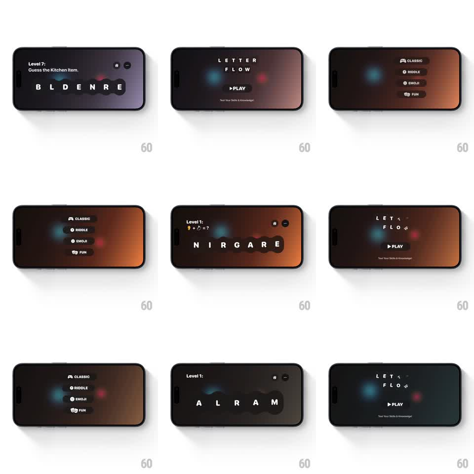

Media
Frame-by-frame

Rebuild this interaction 1:1: Letter Flow's menu reveal - tapping PLAY pops the title elements away and springs in the mode menu buttons (CLASSIC, RIDDLE, EMOJI, FUN) one at a time from small to full scale.

Rebuild this interaction 1:1: Letter Flow's menu reveal - tapping PLAY pops the title elements away and springs in the mode menu buttons (CLASSIC, RIDDLE, EMOJI, FUN) one at a time from small to full scale. ## Integration Integration: stack-agnostic spec - springs given as stiffness/damping, timed motions as duration + curve; map every value to your framework and animation library of choice. ## Scene Same dark gradient scene with glowing orbs. Title state: "LETTER FLOW" logo, PLAY pill, tagline. Menu state: a vertical stack of four pill buttons - CLASSIC, RIDDLE, EMOJI, FUN - each with a small left icon, centered where the logo was. ## Motion spec Pattern: staggered springy menu pop, ~800ms. - Exit: on PLAY tap, the logo letters scale down and fade (150ms, slight rise) and the PLAY pill contracts (scale 1 -> 0.8, fade 150ms). - Pop-in: each menu button scales 0 -> 1.1 -> 1 (spring ~420/16, ~350ms each), staggered 90ms top to bottom, with a soft shadow growing as they land. - Background: the gradient hue shifts warmer (violet -> amber) over the transition (600ms). - Press: tapping a mode button compresses it (scale 0.94, 100ms) before the game screen loads. ## Calibration - The stagger reads top-down in reading order - never random. - Buttons hold a gentle idle float (translateY 2px, 2s alternate, phased) once all landed. ## Reduced motion Menu appears with a single 250ms cross-fade. ## Don't miss - Each pill keeps its icon+label layout at all scales - no layout shift during the spring. - The orbs keep drifting through the transition; they are scene furniture.